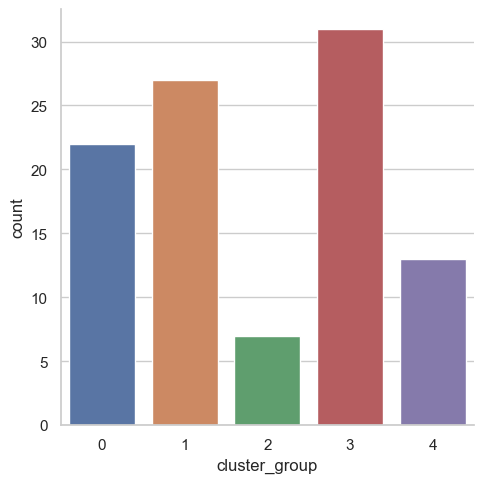

Introduction
One characteristic of textual data in the real world setting is that most of them possess meaning that to convey to their intended audience. The meaning of one message could be similar to another when they are crafted for similar purposes. With the right tool, we can identify such similarities and visualize them to extract insights from textual data.
The data set I will use in this post are movie plot summaries available on IMDb and Wikipedia. Here, I will quantify the similarity of movies based on their plot and separate them into groups before plotting them on a dendrogram to represent how closely the movies are related to each other.
As always, we will begin by importing necessary modules and dataset.
Show code
# Import modules
import numpy as np
import pandas as pd
import nltk
# Set seed for reproducibility
np.random.seed(5)
# Read in IMDb and Wikipedia movie data (both in the same file)
movies_df = pd.read_csv("movies.csv")
print("Number of movies loaded: %s " % (len(movies_df)))
# Display the dataNumber of movies loaded: 100 Show code
movies_df rank ... imdb_plot
0 0 ... In late summer 1945, guests are gathered for t...
1 1 ... In 1947, Andy Dufresne (Tim Robbins), a banker...
2 2 ... The relocation of Polish Jews from surrounding...
3 3 ... The film opens in 1964, where an older and fat...
4 4 ... In the early years of World War II, December 1...
.. ... ... ...
95 95 ... Shortly after moving to Los Angeles with his p...
96 96 ... L.B. "Jeff" Jeffries (James Stewart) recuperat...
97 97 ... Sights of Vienna, Austria, flash across the sc...
98 98 ... At the end of an ordinary work day, advertisin...
99 99 ... NaN
[100 rows x 5 columns]Combine Wikipedia and IMDb plot summaries
The dataset we imported currently contains two columns titled
wiki_plotandimdb_plot. They are the plot found for the movies on Wikipedia and IMDb, respectively. The text in the two columns is similar, however, they are often written in different tones and thus provide context on a movie in a different manner of linguistic expression. Further, sometimes the text in one column may mention a feature of the plot that is not present in the other column. For example, consider the following plot extracts from The Godfather:Wikipedia: On the day of his only daughters wedding, Vito Corleone
IMDb: In late summer 1945, guests are gathered for the wedding reception of Don Vito Corleones daughter Connie
While the Wikipedia plot only mentions it is the day of the daughters wedding, the IMDb plot also mentions the year of the scene and the name of the daughter. We can combine them to avoid the overheads in computation associated with extra columns to process.
Show code
# Combine wiki_plot and imdb_plot into a single column
movies_df["plot"] = movies_df["wiki_plot"].astype(str) + "\n" + \
movies_df["imdb_plot"].astype(str)
movies_df.head() rank ... plot
0 0 ... On the day of his only daughter's wedding, Vit...
1 1 ... In 1947, banker Andy Dufresne is convicted of ...
2 2 ... In 1939, the Germans move Polish Jews into the...
3 3 ... In a brief scene in 1964, an aging, overweight...
4 4 ... It is early December 1941. American expatriate...
[5 rows x 6 columns]Tokenization
Tokenization is the process by which we break down articles into individual sentences or words, as needed. We can also use the regular expression (Regex) method to remove tokens that are entirely numeric values or punctuation to retain only words with meaning.
As an example, we will perform tokenization on a part of Godfathers plot. Notice that quotation marks and numbers were removed in the output.
Show code
# Tokenize a paragraph into sentences and store in sent_tokenized
sent_tokenized = [sent for sent in nltk.sent_tokenize("""
Today (May 19, 2016) is his only daughter's wedding.
Vito Corleone is the Godfather.
""")]
# Word Tokenize first sentence from sent_tokenized, save as words_tokenized
words_tokenized = [word for word in nltk.word_tokenize(sent_tokenized[0])]
# Remove tokens that do not contain any letters from words_tokenized
import re
filtered = [word for word in words_tokenized if re.search('[a-zA-Z]', word)]
# Display filtered words to observe words after tokenization
filtered['Today', 'May', 'is', 'his', 'only', 'daughter', "'s", 'wedding']Stemming
Stemming is the process by which we bring down a word from its different forms to the root word (or to stem). This helps us establish meaning to different forms of the same words without having to deal with each form separately. For example, the words fishing, fished, and fisher all get stemmed to the word fish.
Consider the following sentences:
Young William Wallace witnesses the treachery of Longshanks - Gladiator
escapes to the city walls only to witness Ciceros death - Braveheart
Instead of building separate dictionary entries for both witnesses and witness, which mean the same thing outside of quantity, stemming them reduces them to wit.
There are different algorithms available for stemming such as the Porter Stemmer and Snowball Stemmer. Here, we will use Snowball Stemmer.
Show code
# Import the SnowballStemmer to perform stemming
from nltk.stem.snowball import SnowballStemmer
# Create an English language SnowballStemmer object
stemmer = SnowballStemmer("english")
# Print filtered to observe words without stemming
print("Without stemming: ", filtered)
# Stem the words from filtered and store in stemmed_wordsWithout stemming: ['Today', 'May', 'is', 'his', 'only', 'daughter', "'s", 'wedding']Show code
stemmed_words = [stemmer.stem(t) for t in filtered]
# Print the stemmed_words to observe words after stemming
print("After stemming: ", stemmed_words)After stemming: ['today', 'may', 'is', 'his', 'onli', 'daughter', "'s", 'wed']Tokenization and Stemming together
We are now able to tokenize and stem sentences. But we may have to use the two functions repeatedly one after the other to handle a large amount of data, hence we can think of wrapping them in a function and passing the text to be tokenized and stemmed as the function argument. Then we can pass the new wrapping function, which shall perform both tokenizing and stemming instead of just tokenizing, as the tokenizer argument while creating the TF-IDF vector of the text (we will get there to what TF-IDF means).
All the words are in their root form, which will lead to a better establishment of meaning as some of the non-root forms may not be present in the NLTK training corpus.
Show code
# Define a function to perform both stemming and tokenization
def tokenize_and_stem(text):
# Tokenize by sentence, then by word
tokens = [word for sent in nltk.sent_tokenize(text) for word in nltk.word_tokenize(sent)]
# Filter out raw tokens to remove noise
filtered_tokens = [token for token in tokens if re.search('[a-zA-Z]', token)]
# Stem the filtered_tokens
stems = [stemmer.stem(t) for t in filtered_tokens]
return stems
words_stemmed = tokenize_and_stem("Today (May 19, 2016) is his only daughter's wedding.")
print(words_stemmed)['today', 'may', 'is', 'his', 'onli', 'daughter', "'s", 'wed']Create TF-IDF Vectorizer
Computers do not understand text. These are machines only capable of understanding numbers and performing numerical computation. Hence, we must convert our textual plot summaries to numbers for the computer to be able to extract meaning from them. One simple method of doing this would be to count all the occurrences of each word in the entire vocabulary and return the counts in a vector. This method is called
CountVectorizer.Consider the word the. It appears quite frequently in almost all movie plots and will have a high count in each case. However, the could hardly be counted as the movie plot itself. For that, Term Frequency-Inverse Document Frequency (TF-IDF) is one method that overcomes the shortcomings of
CountVectorizer.In TF-IDF, frequency of a word is the measure of how often it appears in a document, while the Inverse Document Frequency is the parameter which reduces the importance of a word if it frequently appears in several documents. In simplest terms, TF-IDF recognizes words which are unique and important to any given document.
Show code
# Import TfidfVectorizer to create TF-IDF vectors
from sklearn.feature_extraction.text import TfidfVectorizer
# Instantiate TfidfVectorizer object with stopwords and tokenizer
# parameters for efficient processing of text
tfidf_vectorizer = TfidfVectorizer(max_df=0.8, max_features=200000,
min_df=0.2, stop_words='english',
use_idf=True, tokenizer=tokenize_and_stem,
ngram_range=(1,3))Fit transform TF-IDF Vectorizer
Once we create a TF-IDF Vectorizer, we must fit the text to it and then transform the text to produce the corresponding numeric form of the data which the computer will be able to understand and derive meaning from. To do this, we use the
fit_transform()method of theTfidfVectorizerobject.In the TF-IDF object, there is a parameter called
stopwords. Stopwords are those words in a given text which do not contribute considerably towards the meaning of the sentence and are generally grammatical filler words. For example, in the sentence Dorothy Gale lives with her dog Toto on the farm of her Aunt Em and Uncle Henry, we could drop the words her and the, and still have a similar overall meaning to the sentence. Thus, her and the are stopwords and can be conveniently dropped from the sentence.On setting the stopwords to english, we direct the vectorizer to drop all stopwords from a pre-defined list of English language stopwords present in the nltk module. Another parameter,
ngram_range, defines the length of the ngrams to be formed while vectorizing the text.
Show code
# Fit and transform the tfidf_vectorizer with the "plot" of each movie
# to create a vector representation of the plot summaries
tfidf_matrix = tfidf_vectorizer.fit_transform([x for x in movies_df["plot"]])C:\Users\tarid\AppData\Roaming\Python\Python38\site-packages\sklearn\feature_extraction\text.py:383: UserWarning: Your stop_words may be inconsistent with your preprocessing. Tokenizing the stop words generated tokens ['abov', 'afterward', 'alon', 'alreadi', 'alway', 'ani', 'anoth', 'anyon', 'anyth', 'anywher', 'becam', 'becaus', 'becom', 'befor', 'besid', 'cri', 'describ', 'dure', 'els', 'elsewher', 'empti', 'everi', 'everyon', 'everyth', 'everywher', 'fifti', 'forti', 'henc', 'hereaft', 'herebi', 'howev', 'hundr', 'inde', 'mani', 'meanwhil', 'moreov', 'nobodi', 'noon', 'noth', 'nowher', 'onc', 'onli', 'otherwis', 'ourselv', 'perhap', 'pleas', 'sever', 'sinc', 'sincer', 'sixti', 'someon', 'someth', 'sometim', 'somewher', 'themselv', 'thenc', 'thereaft', 'therebi', 'therefor', 'togeth', 'twelv', 'twenti', 'veri', 'whatev', 'whenc', 'whenev', 'wherea', 'whereaft', 'wherebi', 'wherev', 'whi', 'yourselv'] not in stop_words.
warnings.warn('Your stop_words may be inconsistent with 'Show code
print(tfidf_matrix.shape)(100, 564)Import K-Means and create clusters
To determine how closely one movie is related to the other by the help of unsupervised machine learning, we can use clustering techniques. Clustering is the method of grouping together a number of items such that they exhibit similar properties. According to the measure of similarity desired, a given sample of items can have one or more clusters.
A good basis of clustering in our data set could be the genre of the movies. Say we could have a cluster 0 which holds movies of the Drama genre, and 1 for the Adventure genre.
K-means is an algorithm which helps us to implement clustering in Python. The name derives from its method of implementation: the given sample is divided into K clusters where each cluster is denoted by the mean of all the items lying in that cluster.
Here, we will examine how many movies we have in each of the five clusters we specified; then, we will visualize them with a category plot.
Show code
# Import k-means to perform clustering
from sklearn.cluster import KMeans
# Create a KMeans object with 5 clusters and save as km
km = KMeans(n_clusters=5)
# Fit the k-means object with tfidf_matrix
km.fit(tfidf_matrix)KMeans(n_clusters=5)Show code
clusters = km.labels_.tolist()
# Create a column cluster to denote the generated cluster for each movie
movies_df["cluster"] = clusters
# Display number of films per cluster (clusters from 0 to 4)
movies_df['cluster'].value_counts() 3 31
1 27
0 22
4 13
2 7
Name: cluster, dtype: int64Show code
import seaborn as sns
import matplotlib.pyplot as plt
#convert the cluster list into a dataframe
clusters_df = pd.DataFrame(clusters, columns = ['cluster_group'])
sns.set_theme(style="whitegrid")
sns.catplot(x="cluster_group", kind="count", data=clusters_df)
Calculate similarity distance
- By using
countvectorizer, we can turn a sentence into numbers for the computer to calculate similarity distance with the cosine similarity measurement (it is basically a number that indicates how closely related the two sets of words are).
Show code
# Import cosine_similarity to calculate similarity of movie plots
from sklearn.metrics.pairwise import cosine_similarity
# Calculate the similarity distance
similarity_distance = 1 - cosine_similarity(tfidf_matrix)Import Matplotlib, Linkage, and Dendrograms
We will then create a dendrogram of the movie title based on its plot similarity to visualize the level of similarity between our data points.
Dendrograms help visualize the results of hierarchical clustering, which is an alternative to k-means clustering. Two pairs of movies at the same level of hierarchical clustering are expected to have similar strength of similarity between the corresponding pairs of movies.
The more similar the two movies are, the closer they will be together as they travel down the dendrogram path. The plot is a little large to accommodate the number of data points, so you might need to zoom in to see which movie is similar to which.
Show code
# Import modules necessary to plot dendrogram
from scipy.cluster.hierarchy import linkage, dendrogram
# Create mergings matrix
mergings = linkage(similarity_distance, method='complete')
# Plot the dendrogram, using title as label column
dendrogram_ = dendrogram(mergings,
labels=[x for x in movies_df["title"]],
leaf_rotation=90,
leaf_font_size=16,
)
# Adjust the plot
fig = plt.gcf()
_ = [lbl.set_color('r') for lbl in plt.gca().get_xmajorticklabels()]
fig.set_size_inches(120, 50)
# Show the plotted dendrogram
plt.grid(False)
plt.show()
Concluding remark
While I am not an expert in movie critique, the movie plot data is a good venue to practice text cleaning with tokenization and stemming. The TF-IDF method is also widely implemented to extract meaningful information from textual data in general. Lastly, clustering is also a useful exploratory machine learning method to gain insights from unlabeled data to inform our decisions.
This post combines both Narutal Language Processing and Machine Learning techniques to calculate similarity score between sets of words. This method can be used to establish a groundwork for a recommendation system that we often seen in popular sites such as Netflix or Spotify by grouping movies or musics together to recommend them to users. As always, thank you very much for reading!